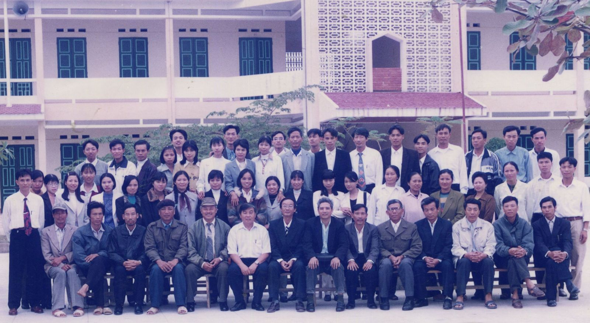

LỊCH SỬ TRƯỜNG THPT DIÊM ĐIỀN
GIỚI THIỆU
 Cuối thập niên 90 của thế kỷ trước xu hướng xã hội hóa trong lĩnh vực giáo dục xuất hiện nhằm đáp ứng nhu cầu học tập của học sinh ở nhiều địa phương trên cả nước trong đó có Thái Bình. Các mô hình giáo dục và đào tạo ngoài công lập được thành lập và xây dựng ngày càng phổ biến từ giáo dục mầm non cho đến các cơ sở giáo dục cao đẳng, đại học.Đến năm 1997, Trường THPT Bán công Thái Thụy cũng được UBND tỉnh Thái Bình cho phép thành lập trên cơ sở chuyển đổi từ trường năng khiếu của huyện Thái Thụy và lấy cở sở cũ của trường THCS Thụy Lương làm địa điểm xây dựng nhà trường.
Năm 2006 thực hiện chủ trương xóa bỏ các mô hình trường bán công trong hệ thống giáo dục quốc dân, Trường THPT Bán Công Thái Thụy chuyển đổi thành Trường THPT Dân Lập Diêm Điền và trở thành mô hình trường phổ thông dân lập đầu tiên trong tỉnh.
Trải qua 23 năm xây dựng và phát triển từ năm 1997 đến nay, Trường THPT Diêm Điền luôn là trường có số lượng tuyển sinh học sinh hàng năm lớn nhất khối trường THPT ngoài công lập tỉnh Thái Bình.
Trong năm học 2019 - 2020, tổng số học sinh toàn trường là 1319 với quy mô 27 lớp, trong đó mỗi khối có 5 lớp chọn nâng cao còn lại là các lớp đại trà. Chất lượng giáo dục toàn diện của nhà trường luôn đứng ở tốp đầu khối trường ngoài công lập về đội tuyển Học sinh giỏi lớp 12 và tỷ lệ tốt nghiệp THPT hàng năm đều đạt trên 99%. Tỷ lệ đỗ các trường cao đẳng, đại học và trung học chuyên nghiệp đạt trên 80%.
Sức hấp dẫn của nhà trường đối với phụ huynh và học sinh ở chỗ: kỉ cương nề nếp chặt chẽ; môi trường giáo dục an toàn và thân thiện; đội ngũ cán bộ, giáo viên có năng lực chuyên môn vững vàng, nhiệt tình, trách nhiệm và quan tâm hết lòng vì học sinh thân yêu.
Cơ sở vật chất và trang thiết bị của nhà trường đang được từng bước đầu tư theo hướng hoàn thiện, đồng bộ và hiện đại bảo đảm cho hoạt động giáo dục trong nhà trường ngày càng hiệu quả; các phòng học được xây dựng kiên cố, có đủ điện sáng, quạt mát, điều hòa không khí... khuôn viên nhà trường gọn gàng, xanh sạch đẹp.
Trường THPT Diêm Điền luôn là niềm tự hào của các thế hệ học sinh đã và đang học tập, rèn luyện nơi đây, là địa chỉ giáo dục tin cậy của các cấp ủy Đảng, chính quyền, phụ huynh và học sinh trên địa bàn huyện Thái Thụy.